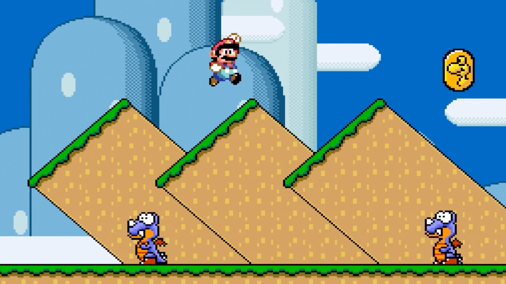
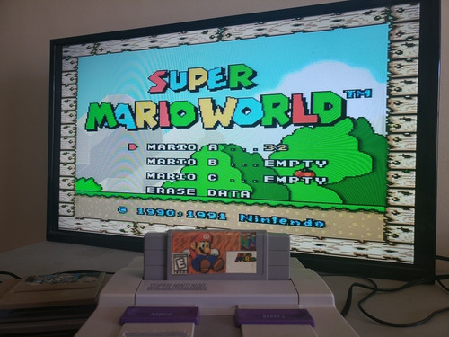
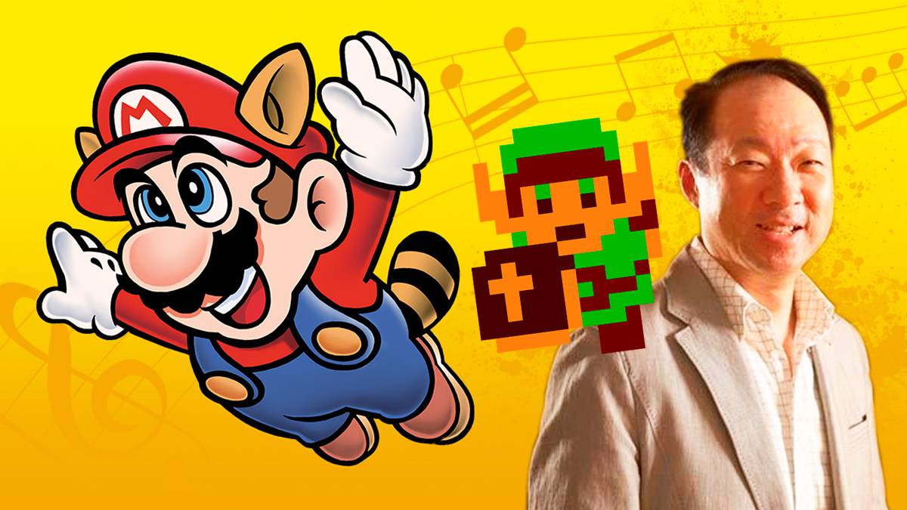

Super Mario World es un videojuego de plataformas desarrollado por Nintendo. Fue lanzado originalmente en 1990 para la consola Super Nintendo. A la fecha de hoy ha sido re-lanzado múltiples veces para la mayoría de las consolas de Nintendo que surgieron a continuación del mismo Super Nintendo, haciendo de este juego uno muy accesible.
Contexto

Este videojuego fue desarrollado por un equipo de 16 personas, dirigido por Takashi Tezuka y producido por el querido Shigeru Myamoto. Fue la primer entrega en un sistema de 16-bits, lo que permitió la inclusión de ciertos elementos que no pudieron ser incluidos en juegos pasados por limitaciones técnicas, tales como Yoshi, famoso dinosaurio cuya inclusión se había soñado desde el primer videojuego de nuestro querido fontanero.
Historia
La historia principalemente se centra en la búsqueda que Mario y Luigi deben emprender para salvar a la "Dinosaur Land" y rescatar a la Princesa Toadstool de las garras de Bowser. Deben viajar por siete mundos para restaurar la paz en toda esta tierra.
Gameplay
El gameplay toma como base mecánicas vistas previamente en juegos como Super Mario Bros y Super Mario Bros 3 para ampliarlas con distintos nuevos elementos, desde nuevos Power-Ups, nuevos tipos de bloque interactuables, hasta el montable dinosaurio Yoshi, el cuál nos puede ser muy útil a la hora de intentar niveles difíciles en cuanto a su naturaleza. Todos estos elementos combinados nos aportan diversas nuevas formas para jugar y disfrutar de este amplio mundo.
Música
En cuanto a la música, el compositor principal fue Koji Kondo, quien compuso todas las pistas usando únicamente un teclado electrónico. Siendo varias de estas variaciones entre sí, modificando la melodía o tomándola como base.